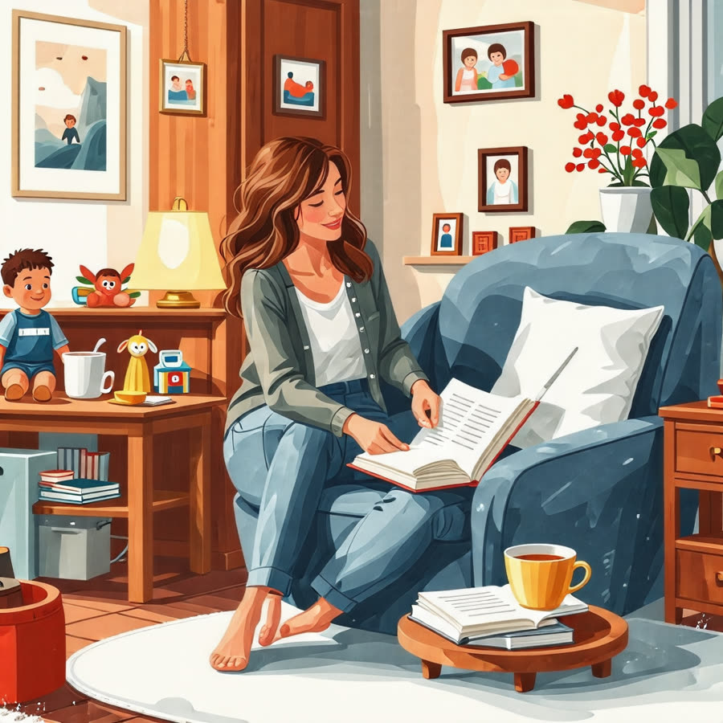

주부 우울증, 어떻게 극복할 수 있을까? 실질적인 팁 공개
안녕하세요, 생각공작소 입니다 :)
오늘은 많은 주부분들이 놓치고 있는
주부 우울증에 대해 알아볼까 해요. 😊
우리 어머니들이 겪는 주부 우울증은
정말 다양한 원인들로 인해 발생합니다.
힘든 육아와 가사, 그리고 가족 간의 갈등 ...
여러 가지 스트레스가 이만저만이 아닐 거에요.
특히, 결혼 후 가정에 헌신하면서 자신을 잃어버리는 경우가 많죠😣
이러한 주부 우울증의 원인과 극복 방법에 대해 알아보아요 :)
주부 우울증이란?
주부 우울증은 기혼 여성, 특히 30대, 40대에서 매우 흔히 나타나는 심리적 어려움이에요.
주로 결혼 생활과 육아에서 오는 스트레스로 인해 발생합니다. 😭
(자녀 양육의 압박, 부부 간의 갈등, 전통적 결혼 문화, 경제적 부담 등)
다양한 요인이 복합적으로 작용해 우울감을 유발합니다.
주부 우울증의 원인
주부 우울증의 시작은 출산 이후, 바로 산후 우울증으로부터 시작됩니다.
호르몬이 급격하게 요동치고, 이에 따라 신체적 변화 또한
갑작스럽게 일어나면서, 감정적인 불안정성을 초래하고
새로운 역할에 대한 부담감이 더해지면서 우울감이 매우 심화됩니다.
이러한 감정이 시간이 지나도 해소되지 않을 경우, 주부 우울증을 더욱 촉발하고
언제든지 다른 우울증으로 발전할 수 있습니다.
주부 우울증의 원인은 크게 세 가지로 나타납니다.
1. 일상의 스트레스
매일 반복되는 힘든 육아와 가사일로 인해 자신을 돌아볼 시간이 부족해집니다.
이러한 지속적인 압박감이 쌓이면서 우울감을 유발할 수 있습니다.
2. 사회적 고립감
친구들과의 만남이 줄어들고, 대화 상대가 없을 때 외로움을 느끼는 경우가 많습니다.
이러한 고립감은 심리적 부담을 더욱 가중시킵니다.
3. 부부 간의 갈등
서로의 기대가 충족되지 않을 때 생기는 감정의 골이 우울증으로 이어질 수 있습니다.
의사소통 부족이나 갈등은 심리적 스트레스를 증가시키는 요인이 됩니다.

주부 우울증 극복방법
1. 반드시 자기만의 시간 만들기
어머니들은 자신만의 시간을 갖기 어려운 경우가 많습니다.
하지만, 작은 시간이라도 자신을 위한 행복한 활동을 계획하는 것이 정말 중요합니다.
짧은 시간이라도 취미생활이나 혼자만의 시간을 가지며 재충전해 보세요.
" 나를 위한 작은 행복이 중요합니다. "
2. 가족과의 소통
남편이나 가족이 아내의 어려움을 이해하고, 격려하는 것이 중요합니다.
일상에서의 작은 배려와 대화는 서로의 마음을 이해하는 데 큰 역할을 합니다.
가족과의 시간을 통해 기분 전환을 할 수 있습니다.
남편이나 가족과 마음속 이야기를 나눠보세요. 서로의 감정을 이해하는 것이 큰 힘이 될 수 있어요.
3. 사회적 연결
비슷한 관심사를 가진 사람들과의 소통은 우울감을 덜어주는 좋은 방법입니다.
친구들과의 만남이나 새로운 활동은 삶의 활력을 불어넣을 수 있습니다.
친구들과의 수다나 소소한 모임을 통해 긍정적인 에너지를 얻는 것도 좋은 방법입니다.
4. 전문가의 도움 받기
심리 상담 센터나 전문가의 도움을 받는 것도 좋은 방법입니다.
전문 상담사는 여러분의 감정을 이해하고, 효과적인 대처 방법을 제시해 줄 수 있습니다.
필요할 땐 주저하지 말고 전문가와 상담해 보세요.
주부 우울증은 다양한 원인에서 발생하며,
이를 극복하기 위해서는 자기 관리와 가족의 이해가 필수적입니다.
자신의 감정을 솔직하게 표현하고, 필요한 도움을 요청하는 것이 중요합니다.
노력을 통해 긍정적인 변화를 만들어 나갈 수 있습니다.
인천시 남동구, 연수구, 미추홀구, 서구 에 위치한 #심리상담센터 로
전연령층과 전직종을 대상으로 #심리상담 을 도와주는 곳입니다. :)
평생을 미술치료와 심리상담에 종사하신 소장님과
실력과 경험 많은 상담사들이 당신을 기다리고 있습니다.
더욱 자세한 정보는 문의를 통해 확인해주세요 :)
T. 032-277-2007